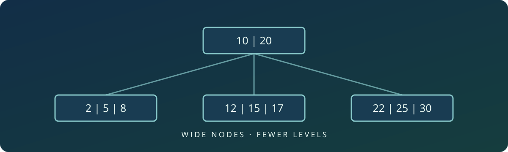

Week 13 · Interactive lesson · Version 1
External-Memory and Advanced Structures
B-trees, B+ trees, branching factors and page-oriented indexing.

Essential path: anatomy, constructor, operation microscope, invariant debugger, degree experiments and B+ comparison. Use the self-checks afterwards; C++ examples are optional.
1. Why wide nodes?
Weeks 9–10 used binary search trees; Week 12 used branching character paths. A B-tree instead groups many ordered keys into one multiway node. In an external-memory model, retrieving an uncached storage page can be much more expensive than inspecting several keys already in RAM.
Logical node visit ≠ physical I/O. An in-memory node is not necessarily one real disk page. Experiment below with a cold-start LRU cache on the current constructor tree. Costs are hypothetical units, not hardware measurements.
Set cache capacity to zero, then two. Compare visits, hits and misses.
2. B-tree anatomy
We use minimum degree t ≥ 2, not the alternative order convention. Nonroot nodes contain t−1 to 2t−1 keys. Internal nodes with k keys have k+1 children; all leaves share a depth. Keys are strictly increasing and every subtree obeys its ancestor separator intervals. A nonempty root has at least one key; an empty tree has height zero.
The diagram shows a full node. Predict the child interval before checking.
3. Construct a B-tree
Load a preset, enter your own ordered insertion sequence (commas or spaces), or generate a seeded permutation. The displayed tree is a set: duplicates leave its shape and size unchanged. Browser limit: 120 integers, each between −999999 and 999999. Changing degree takes effect when loading or generating a tree.
4. Search and 5. insertion microscope
Predict first, then step through the operation. Search shows a node visit and selected child or exact match. Compare linear versus binary search within each node. Insertion splits a full child before descent, promotes the median at zero-based index t−1 and distributes t child pointers to each side if internal. Root splits increase height. The microscope works on an independent copy; import again after changing the constructor.
Try reset → Next until the full child is highlighted. Predict the promoted key before advancing. Some intermediate snapshots intentionally depict an operation in progress. For nonroot and internal splits, load the corresponding constructor preset, copy it here, then replay the sequence.
6. Invariant debugger
Inspect the deliberately broken tree, choose the repair that addresses the structural problem and validate the restored reference. The checker reports all detected violations, so one mutation may break several invariants. This is a guided repair exercise, not a free-form tree editor.
7. Branching-factor laboratory
Construct six trees from the same distinct keys in the same order. Compare degree, height, occupancy, splits, model key/pointer movements and logical search costs. A higher degree reduces height in many workloads, but increases potential in-node movement. Movement counts are a simplified logical model, not actual memory copies.
| t | Height | Nodes | Occupancy | Splits | Model moves | Mean visits | Max visits | Mean comparisons |
|---|
Use 100 keys, then 1000. Which degree minimizes logical visits? Does it also minimize comparisons?
8. Page-capacity calculator
A simplified internal page uses H + kK + (k+1)P ≤ B bytes, where H is header, K key size, P pointer size and B page size. Maximum keys = floor((B−H−P)/(K+P)). Leaf records have their own capacity floor((B−H)/R). The page-level calculation uses ideal full occupancy.
9. B-tree versus B+ tree
In this B-tree set, internal keys are actual stored keys. In a B+ tree, internal keys are separators; the records are at the leaves and leaf pages are linked. Both fixtures contain the same distinct record keys. B+ equality follows the right-hand separator interval.
B-tree: records at all levels
B+ tree: leaf records and links
Highlighted nodes were visited. Compare a point query for 10 and a range from 8 to 22. The B+ tree is a read-only fixture, not a dynamic insertion implementation.
10. Complexity and engineering decisions
Let n be distinct keys, t minimum degree, h height in levels, and p leaf pages traversed for an ordered range.
| Operation | Bound |
|---|---|
| Height | O(logₜ(n+1)) |
| Search logical visits | O(h) |
| Linear in-node search | O(th) |
| Binary in-node search | O(h log t) |
| One split | O(t) CPU work |
| Insertion with contiguous node arrays | O(th) worst-case CPU work |
| Recursive insertion stack | O(h) |
| B+ range page visits | O(h+p) |
Choose by workload, ordering requirements, memory location and correctness guarantees, not just Big-O. Hash tables support expected efficient exact lookup but not natural ordered range scans. Balanced BSTs are suitable for ordered in-memory keys; tries exploit shared prefixes; B+ trees support page-oriented range scans.
Optional enrichment: skip lists, treaps and segment trees
Skip list: ordered linked levels with expected logarithmic operations under suitable randomization.
level 2: 2 ─────────── 8 level 1: 2 ── 5 ────── 8 level 0: 2 ── 5 ── 6 ─ 8
Treap: BST ordering by key and heap ordering by randomized priority; expected logarithmic height.
key 20, priority 1
/ \\
key 10, p=4 key 30, p=3Segment tree: recursively partitions an array into intervals, storing aggregates for range queries and point updates, typically O(log n) for associative aggregates.
[0..7]
/ \\
[0..3] [4..7]Deletion in a B-tree may require borrowing or merging to restore occupancy. Full deletion, B+ insertion, persistence and concurrency are outside this lab.
11. Formative self-checks
Thirty independent practice questions. Immediate feedback is formative, not a grade or Moodle quiz. Retry any question.
12. C++20 implementation corner
Independent short demonstrations, not the assessed lab implementation. Compile each separately with g++ -std=c++20 -Wall -Wextra -pedantic file.cpp -o demo && ./demo.
Multi-key node representation
A sorted key array defines one more child interval than key slots.
#include <iostream>
#include <vector>
int main() {
const std::vector<int> keys{4, 9, 17};
std::cout << "Keys: " << keys.size() << '\n';
std::cout << "Possible internal children: " << keys.size()+1 << '\n';
}
Separator intervals
This fixed example uses nonmatching keys; exact equality is a stored-key match in the course B-tree.
#include <array>
#include <iostream>
int main() {
const std::array<int, 2> separators{10, 20};
for (int x : {5, 15, 25}) {
if (x < separators[0]) std::cout << x << ": left\n";
else if (x < separators[1]) std::cout << x << ": middle\n";
else std::cout << x << ": right\n";
}
}
In-node binary search primitive
Observe the standard-library search primitive on an ordinary vector, without implementing tree lookup.
#include <algorithm>
#include <iostream>
#include <vector>
int main() {
const std::vector<int> a{3, 8, 12, 18};
const auto it = std::lower_bound(a.begin(), a.end(), 10);
if (it != a.end()) std::cout << "First key >= 10: " << *it << '\n';
}
Median position
Identify the median without implementing a split.
#include <array>
#include <iostream>
int main() {
constexpr int t = 3;
const std::array<int, 2*t-1> a{2, 4, 6, 8, 10};
std::cout << "Median: " << a[t-1] << '\n';
std::cout << "Keys on each side: " << t-1 << '\n';
}
Unique ownership transfer
Moving transfers ownership; it does not duplicate the owned object.
#include <iostream>
#include <memory>
#include <utility>
int main() {
auto original = std::make_unique<int>(42);
auto recipient = std::move(original);
std::cout << std::boolalpha << (original == nullptr) << ' ' << *recipient << '\n';
}
Local occupancy check
Check a nonroot occupancy condition in isolation.
#include <iostream>
int main() {
constexpr int t = 3;
for (int k : {1, 2, 5, 6}) {
const bool valid = t-1 <= k && k <= 2*t-1;
std::cout << k << ": " << std::boolalpha << valid << '\n';
}
}
Hypothetical page capacity
The layout is hypothetical, not sizeof a C++ node.
#include <iostream>
int main() {
constexpr int B=4096, H=64, K=8, P=8;
constexpr int keys = (B-H-P)/(K+P);
std::cout << "Keys: " << keys << ", fanout: " << keys+1 << '\n';
}
Ordered range query in STL
A standard ordered container supplies range operations; std::set is not required to be a B-tree.
#include <iostream>
#include <set>
int main() {
const std::set<int> values{2, 4, 6, 8, 10, 12};
for (auto it=values.lower_bound(4); it!=values.upper_bound(10); ++it)
std::cout << *it << ' ';
std::cout << '\n';
}